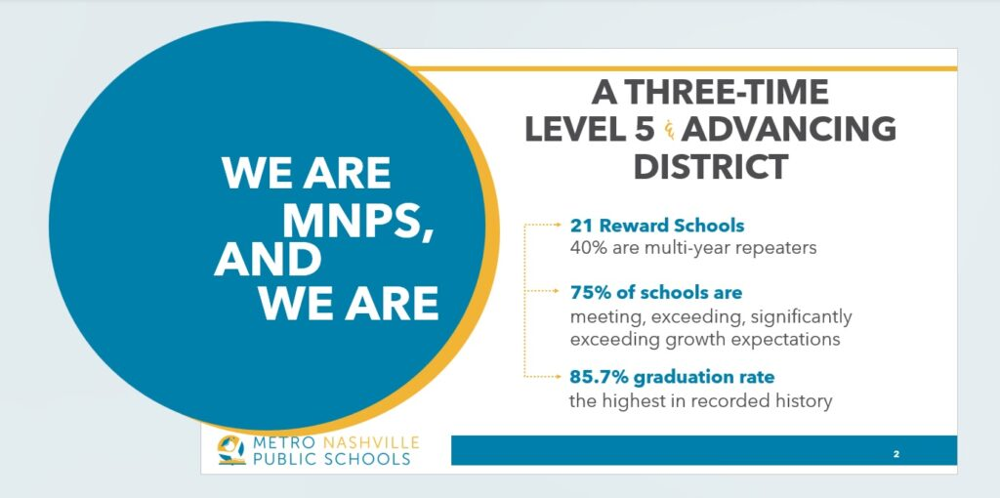
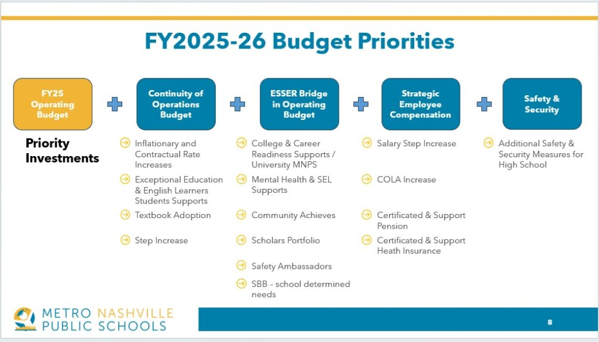
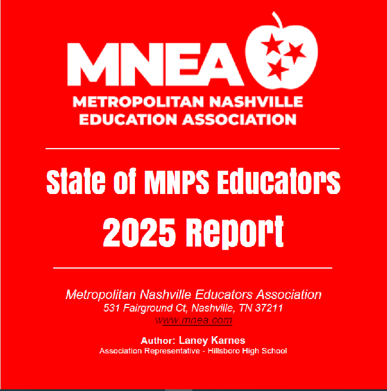
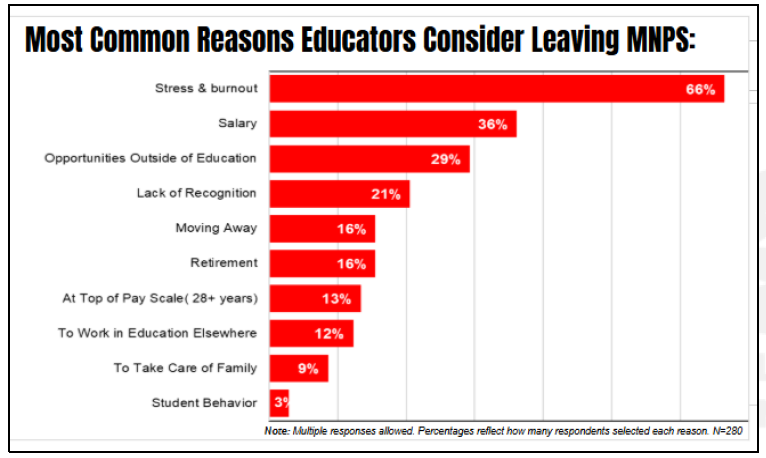
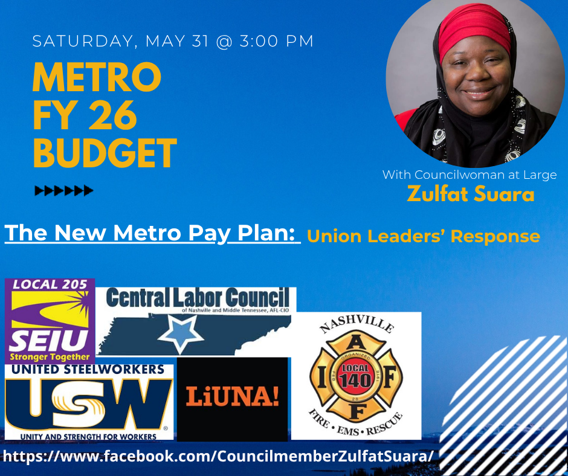

What You Need to Know About the FY26 MNPS Operating Budget
Hello, everyone!
Thank you for continuing to stay informed and engaged on the issues that matter most to our communities—especially education. As your Metro Council Member At-Large, I’ve long said that a budget is a moral document. It is where we show our values. That’s why each year, I pay close attention to what our budget says about our commitment to our children, our teachers, and the future of public education in Nashville.
Due to schedule conflict, I was not able to conduct a Budget Conversations about our children’s education as I have done in the past. However since MNPS budget represents a very large portion of Metro’s budget, I feel it’s very important for residents to know about the MNPS budget for next fiscal year. As a result, instead of my regular Facebook conversation’s, this blog is based on the FY 26 Metro Budget hearings held by Budget Chair- Delishia Porterfield.
On May 22, we gathered in Council Chambers for one of the most important hearings of the budget season—the FY26 Metro Nashville Public Schools (MNPS) Operating Budget Hearing. This was more than just a meeting; it was a comprehensive overview of where we are as a district, what we’ve achieved, and where we need to go next.
If you missed the live hearing, you can watch the video at the end of the blog, and I encourage everyone to review the full MNPS presentation as well. For those who want a breakdown of the key moments, the facts, the figures, and what’s at stake—this blog post is for you.
Student Success: A Story of Progress & Promise
Let’s begin with the good news: MNPS is achieving real results.
- Enrollment has grown to approximately 82,000 students, up from ~80,000 last year.
- Graduation rates are at an all-time high of 85.7%, marking a 4.5 percentage point increase year-over-year.
- TVAAS growth is at Level 5—the highest rating—for the third consecutive year, a first in district history.
- Our district is now labeled “Advancing” by the state and was ranked 4th in Math and 9th in Reading among the 100 largest U.S. districts by the Harvard/Stanford Education Recovery Scorecard.—making us the only district to place in the top ten in both subjects two years in a row.
This data matters. It shows that the investments we’ve made in tutoring, summer learning, mental health, and school-based supports are paying off. But as Dr. Battle said so clearly, “Sustaining progress requires sustained funding.”

The FY 26 Budget: What’s In, What’s Needed
But this success is fragile. Much of it was fueled by time-limited federal funds through the Elementary and Secondary School Emergency Relief (ESSER) program. With those funds expiring, the FY26 budget must absorb $65.5 million worth of programs into the local operating budget. The board-approved FY26 budget prioritizes four key areas: continuity of operations (to keep pace with inflation and essential cost growth), sustaining strategic ESSER-era investments, providing fair compensation for employees, and strengthening school safety through a multi-layered approach.

By the Numbers: What the FY26 Proposal Looks Like
- 13% increase in MNPS’s appropriation—the largest one-year increase ever proposed.
- $65.5 million in ESSER-funded programs shifted into the recurring operating budget.
- $45 million compensation package: 3% COLA + step raises (~5% raise overall), with a $2,000 one-time bonus for certificated staff and increased health coverage.
- $20.4 million for student supports, including English learners and speech services (no new positions—these already exist in schools).
- $21.4 million for inflation-related increases, such as utility contracts and materials.
- $13.5 million increase for charter school pass-throughs.
- $11 million for science textbook adoption, now absorbed into recurring costs.
- $1.2 million for high-school weapons detection upkeep.
To balance the books, MNPS identified $22 million in targeted savings and efficiencies. Crucially, no school-level funding was reduced.
What’s at Risk Without Full Funding
Several challenges remain outside of local control:
- TISA (Tennessee Investment in Student Achievement) state funding figures are still pending. The current projection is a $10 million cut due to the “fiscal capacity index.”
- Voucher and charter school expansion laws could further reduce public education funding.
- Federal ESSER liquidation deadlines could jeopardize transition planning.
- Tariff-driven inflation and global uncertainty make budgeting unpredictable.
The Council will get final state funding numbers in June, and the MNPS budget will adjust accordingly.
Key Programs We’re Preserving Locally
Thanks to Metro’s investment and the Mayor’s proposed budget, we can maintain several critical programs after ESSER sunsets:
- Scholars Portfolio ($24M): High-dosage tutoring, Saturday programming, and the Promising Scholars summer initiative.
- College & Career Pathways ($6.3M): Early-college models and full-ride partnerships with local universities, plus summer stipends.
- Mental Health & SEL ($6.3M): Advocacy Centers, counselors, and restorative-practice staff.
- Community Achieves ($1.5M): Wraparound partnerships with nonprofits.
- Safety Ambassadors ($3.4M): Unarmed elementary school security staff and the 9-school SRO pilot.
- Student-Based Budgeting ($12M): Targeted site-level investments based on demographic needs.
A Closer Look: Teacher Pay, Planning Time, and Burnout

Metro Nashville Education Association member shared the recent survey with members. We heard loud and clear from teachers: pay and planning time are top concerns. AS a result, councilmembers pushed MNPS leaders for data on teacher burnout, sub coverage, and how classroom-associate roles can alleviate workloads.
I asked Dr. Paula Pendergrass- MNEA President, about the survey. Below are her responses:
What was the reason behind the survey?
The purpose of the survey is to gather input that informs policy recommendations aimed at improving educator support across multiple levels—Individual School Administration, District and School Board, and the Metropolitan Government. These recommendations focus on strengthening school leadership, protecting planning time, reducing non-instructional burdens, and advocating for fair compensation, affordable housing, and transparent budgeting to enhance educator wellbeing and retention within MNPS
What is the outcome/what did you learn?
Key Finding #1: Stress and burnout now top the list of reasons why educators are planning to leave MNPS and, in many cases, the profession
Key Finding #2: Educators Feel Overburdened by Extra Duties & Lack of Planning Time
Key Finding #3: Cost of Living in Nashville is a Major Barrier for Educator Retention
Key Finding #4: Administrative Support Is a Driving Force Behind Educator Satisfaction and Workplace Conditions

What would you like the next steps to be?
- Conduct a Comprehensive Educator Salary Study- A comprehensive salary study should be conducted specifically for MNPS educators by Metro HR, separate from broader analyses of overall Metro employee compensation.
- Increase Transparency and Stakeholder Input in Metro Budgeting in Drafting Stages- While the MNPS budget process should be reformed to include formal, structured opportunities for feedback from key stakeholders, including educators, parents, and community members, there is little to no interaction with stakeholders in the initial drafting phases of the budget. The Metro budget process must be opened to those who live its consequences—educators, families, and community members.
- Invest in Educator Affordability and Housing Security –Nashville educators are being priced out of the city they serve. Metro must create and expand housing assistance specifically for educators, including rental supports, first-time homebuyer aid, and down payment assistance.
- Advance Zoning Reform for Affordable Housing-Educators shouldn’t have to drive an hour to get to work. Metro zoning must be restructured to support mixed-income and educator-preference housing near schools and transit corridors. When educators can live in the communities they serve, students gain stability, and schools retain experienced staff. This isn’t just a housing issue—it’s a public education issue.
Final Thoughts: Education Is a Long-Term Investment
This proposed 13% funding increase is not a windfall—it’s a necessary catch-up after years of underinvestment and a one-time infusion of federal money. We can—and must—ensure that our schools continue to climb. It’s not enough to celebrate past growth; we must fund the future.
For those who missed this important conversation, you can watch it at the link below. I encourage you to tune in each Saturday until the budget is passed—we’ll be diving into different aspects of the budget and how it affects all of us.
NEXT BUDGET CONVERSATION- NEW PAY PLAN- UNION LEADERS’S PERSPECTIVES
There is a new Metro Pay Plan. Join union leaders from CLC, SEIU, USW. LiUNA. IAFF as we discuss the new employee pay plan

Thank You
As always, I am grateful for your continued engagement. Whether it’s education, housing, infrastructure, or safety—your voice shapes the decisions we make.
Together, let’s keep building a Nashville that invests in every child, every classroom, every future.
With gratitude and determination,
Zulfat Suara
Metro Council Member At-Large